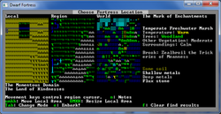
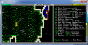
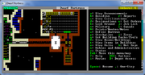
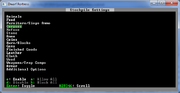
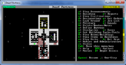
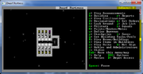
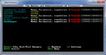
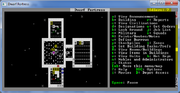
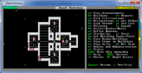

Помните, что в этой игре проигрывать весело! Будьте готовы к тому, что вы потеряете не одну крепость, пока будете разбираться в игре следуя руководству. Зато, теряя крепость, вы приобретаете бесценный опыт и в следующий раз вы будете знать, почему вы проиграли. В Dwarf Fortress вы учитесь на своих ошибках.
Итак, вы решили окунуться в удивительный мир Dwarf Fortress, но не знаете с чего начать. Это не удивительно, в Dwarf Fortress вы можете делать всё, что угодно. Эта сложная игра содержит огромный мир событий и приключений. Но прежде чем бросаться в омут веселья и испытаний, нужно создать крепость, уверенно стоящую на ногах. И это не так сложно, как может показаться на первый взгляд.
От фургона с переселенцами к хорошей крепости — Эта схема описывает примерные шаги развития крепости. Вы можете не акцентировать на ней внимания, так как не обязательно сверяться с ней при работе с данным руководством. Однако, когда с руководством будет закончено, имеет смысл посмотреть на неё снова.
Хотя данное руководство содержит много ссылок на поясняющие статьи, вам может потребоваться получить дополнительную информацию. Используйте для этого поиск по вики-дварфии и не стесняйтесь обращаться за помощью на форум.
Этот документ и большинство документов в этой викидварфии используют символы клавиш (подобные t) для обозначения того, какая клавиша используется для какого действия. Обратите внимание, что они чувствительны к регистру. Для экономии места Shift+t будет писаться как T. Поэтому t означает "нажмите клавишу 't' без клавиши Shift", а T означает "зажмите Shift и нажмите клавишу 't'". Последовательности клавиш будут записаны с помощью тире между ними. Так что a-b-C означает "нажмите 'a', затем нажмите 'b', затем зажмите shift и нажмите 'C'".
| Esc | Вернуться к предыдущему экрану/меню |
| ↑ ↓ ← → | Изменить активный пункт меню или сдвинуть курсор |
| - + | Дублирующие клавиши выбора меню |
| Enter | Выбрать пункт меню |
Esc практически всегда позволит вам вернуться к предыдущему экрану до тех пор, пока вы не достигнете верхнего уровня UI (пользовательского интерфейса), где показывается меню настроек.
Играть в стандартную версию с ASCII-символами или в графическую версию, решайте сами, смотря как вам будет интереснее/комфортнее/увлекательнее. Обычную версию с ASCII вы можете скачать с сайта игры, качайте SDL, версия Legacy предназначена для тех у кого есть технические проблемы.
Краткий перечень графических версий представлен в вики-дварфии на странице графическая версия игры. Рекомендуется скачать пакет Lazy Newb Pack, в нём есть удобный выбор различной графики, набор незаменимых утилит, плюс возможность быстрой настройки игры, без редактирования специальных файлов.
Первым делом вам нужно будет создать новый мир. Для этого в меню нужно выбрать Create New World! В отличие от многих других игр, мир в котором вы будете играть всегда создаётся случайным образом, здесь нет мира «по умолчанию» или «стандартного».
Базовая версия генерации мира довольно простая и не отнимает много времени, если ваш компьютер не слишком устаревший.
Для вашей первой игры, создайте мир используя опцию Create New World! в главном меню со следующими параметрами:
Embark — это комплекс мероприятий: выбор места для вашей будущей крепости, экипировка дварфов и отправка их в дорогу.
Выберите Start Playing в главном меню, а затем нажмите Dwarf Fortress.
Справа вы увидите World Map, карту всего мира. По центру расположена карта региона Region Map, на которой показывается увеличенный фрагмент карты мира, на котором в данный момент находится курсор. И, наконец, слева находится локальная карта Local Map, на которой в свою очередь показывается увеличенный фрагмент карты региона, на котором находится курсор. По карте мира и региона курсор перемещается стрелочками ↑ ↓ ← →, чтобы ускорить перемещение, удерживайте Shift. Место высадки на локальной карте уточняется клавишами u m k h. Размер территории для крепости можно увеличить клавишами U M K H, но не советуем это делать, по крайней мере для первых крепостей — чем больше территория, тем большая нагрузка ложится на ваш процессор.
Выбор хорошего места для высадки критичен для новичка. Опытные игроки могут усложнять себе жизнь и строить крепость в леднике, но для новичка подобный вариант неприемлем и нужны комфортные условия. Ниже перечислены условия, при которых ваша первая крепость будет чувствовать себя намного комфортнее.

Пример хорошего места для старта.
Для вашей первой крепости найдите место со следующими характеристиками:
Примечание к утилите поиска: «Calm» классифицируется как Evil: Medium, Savagery: Low (смотри таблицу здесь, если нужно объяснение). Поиск обычно подсказывает обширную территорию, вам нужно будет вручную выбрать наиболее подходящее место и размер участка под крепость.
Обычно поиск занимает 1-2 минуты, по его окончанию нажмите ESC чтобы приступить к просмотру найденных мест (мигающие Х на карте). Подводите жёлтый Х на мигающие области и справа будет появляться информация о них. Выбирайте самый лучший на ваш взгляд вариант!
В одном месте могут встретиться одновременно несколько биомов. Если это произошло (появилась надпись View Biome), то нажатием F1, F2 и так далее можно переключаться между ними, чтобы посмотреть описание каждого. В случае необходимости подкорректируйте расположение вашей крепости на локальной карте. Это важно, так как биомы могут иметь абсолютно разные характеристики.
Прочтите раздел Выбираем место для того, чтобы узнать, почему важны различные характеристики.
Нажмите embark, как только убедитесь, что выбрали правильное место.
Если вы хотите сами подобрать каждому дварфу индивидуальные навыки и выбрать нужное снаряжение для своей экспедиции, то выбирайте пункт Prepare for the journey carefully и прочитайте раздел Preparing carefully для получения инструкций. Это не является обязательным.
Перед вами должен появиться экран Prepare for the Journey. У вас есть следующий выбор:

Приступаем к работе. На этом рисунке дварфы скоро прокопают туннель для входа в будущую крепость в склоне песчаной горы.
Итак, повозка с вашими дварфами прибыла в назначенное место. Вы обнаружите своих дварфов, кучкующихся вокруг повозки, полной припасов, где-то в середине вашей карты.
Не снимайте игру с паузы. Сначала осмотритесь по сторонам. Увеличьте игровой экран, выключив карту региона клавишей Tab и растяните окно мышкой до нужного размера. Нажмите k и перемещайте курсор стрелками, в этом режиме вы сможете изучать, что означают те или иные клетки (тайлы), что на них находится. Спуститесь в недра земли на несколько уровней и подниметесь снова вверх, используя < и > (Shift с , и .). Если вы потеряетесь, то жмите F1 и вы снова перенесётесь к повозке со своими дварфами. Позже вы сможете назначить и другие горячие клавиши, чтобы быстро перемещаться в нужную область карты.
Обратите внимание на особенности рельефа, типы растительности, различные горные породы (если они просматриваются). Если вы выбирали карту с рекой, найдите где она расположена. Есть ли на карте ещё источники воды? Изучите местность вокруг своей будущей крепости получше, прежде чем углубитесь под землю.
Помните, что это больше симулятор жизни, а не игра. Здесь не получится «найти игровой баланс» и вы можете запросто поставить себя в безвыходное положение. В этом и заключается веселье, даже если вы проиграете, у вас получится интересная история.
Ваш фургон является местом встреч (meeting area) для ваших дварфов. Хотя вы и начали играть в незамерзающем, спокойном и не злом биоме, и вам не угрожает немедленная опасность, стоит в скором времени перебраться в более безопасное место, назначив другую общественную зону с помощью клавиши i (читайте ниже о создании временной общественной зоны).
Намотайте себе на ус, в большинстве случаев вы не сможете напрямую управлять своими дварфами, как вы это делаете управляя персонажем в какой-нибудь RPG. Вместо этого вы указываете, что нужно сделать, наделяете дварфов рабочими обязанностями, а они уже сами начинают трудиться по своему усмотрению.
Например, если дварфу нужно поесть, он вернётся рыть тоннель только когда подкрепится и не раньше. Также возможно назначить такую работу, которую дварф не сможет выполнить. Например, вы обозначили прокопать тоннель, но ни у одного из дварфов нет в обязанностях шахтёрской работы или у вас отсутствуют кирки, в этом случае ваше указание останется невыполненным, а игра не всегда подскажет вам почему это произошло.
Так что вашей задачей будет выдавать дварфам детальный список дел и устанавливать им рабочие обязанности, а они уже сами будут решать, как эту работу выполнять и какие материалы использовать (например, выбирать вид камня для крафта каменных поделок).
Уважающие себя дварфы живут под землёй, плюс там довольно безопасно, не то что на поверхности. Поэтому вам нужно научиться выкапывать тоннели и лестницы.
Для того, чтобы вырыть вход в крепость, нажмите d, чтобы попасть в специальное меню указаний — designation menu. С его помощью Вы можете выбрать участок, который нужно прокопать, или дать указание соорудить лестницу или пандус, и многое другое. Нажмите d ещё раз, чтобы убедиться, что вы отдаёте приказ именно на раскопку, а затем используйте Enter для того, чтобы отметить два противоположных угла прямоугольника, который должен быть выкопан.
Выберите, в каком направлении копать. При наличии крутых склонов, вы начинаете копать прямо в склоне холма или скалы. Если местность равнинная, то есть два варианта:

Уровень 0: Этот уровень земли мы назовём «уровень 0». Слева находится входной коридор, снаружи крепости проглядываются хранилище древесины и могильник. Внутри расположено главное хранилище, торговая площадь, лестницы и ферма.
В конце прокопанного прохода выкопайте комнату 5х5 (позднее здесь будет торговая площадь). Затем прокопайте ещё небольшой коридор и создайте ещё одно помещение, но уже побольше, примерно 10х10 клеток, здесь будет главное хранилище. Примерная схема показана на картинке, но вы можете сделать всё по своему усмотрению.
Не делайте помещения слишком большими, так как ваши шахтёры ещё неопытны и потратят много времени на то, чтобы их вырыть, особенно если им приходится работать не в почве, а в скальной породе. Выкопайте одно помещение, а потом дайте указание приступить к следующему.

Храните трупы, отходы, камни и древесину вне главных хранилищ, потому что они быстро займут всё место. Вы всегда можете изменить настройки хранилища, используя q, затем наведя курсор на нужное хранилище, нажать s. Позже постарайтесь сделать более специализированные хранилища.
Stockpile или хранилища (кладовые если вам будет угодно) очень важная штука. Это место, где ваши дварфы будут хранить предметы, которые пока нигде не понадобились.
Чтобы создать ваше первое главное хранилище:
Очень важно держать такие вещи как wood, stone, refuse и corpse за рамками вашего главного хранилища, поэтому дважды проверьте, что они были выключены в настройках, иначе возникнут определённые проблемы.
И ещё одно примечание. Когда делаете разметку хранилища, убедитесь, что на его месте находится пустая земля, иначе дварфы будут считать, что данное место занято и ничего не положат сюда. Возможно вам понадобится назначить сначала зону для мусора.
Чуть подальше от вашего основного входа выройте помещение размером 3х3 и в его середине дайте указание создать Downward Stairway (лестницу вниз) с помощью d-j. После того, как шахтёр выполнит указание, вы обнаружите, что лестница вниз выкопана, но обратной лестницы вверх нет. Если опуститься на уровень глубже >, то там просто станет видимым тайл горной породы/почвы. Теперь вам нужно сделать лестницу Up/Down Stairway (вверх/вниз), выбрав её в меню с помощью d-i. Под этой лестнице можно создать ещё одну и так далее. Таким образом можно уйти в землю на любую глубину, но этим вы займётесь позже.
Дварф выполняет только ту работу, которая выставлена у него в рабочих обязанностях. Если дварфам им не выдано никаких указаний или в их настройках нет разрешения выполнять те или иные виды работ, они будут лоботрясничать.
Например, если у дварфа стоит в обязанностях Fishing, то он может заняться ловлей рыбы. А если вы разметили прокопать участок, но ни у кого из дварфов не стоит в обязанностях Mining, они будут считать, что это их не касается.
У дварфов по умолчанию включены работы по переноске и очистке, и ещё некоторые типы работ, если они пришли в игру имея определённые навыки. Вот поэтому вам и не пришлось устанавливать обязанности по переноске вещей и по копанию туннелей, потому что вы изначально дали паре дварфов навыки шахтёра. Но в будущем вам понадобится менять эти настройки.
После того, как закончите с копанием и созданием хранилища, посмотрите какие рабочие обязанности имеются у ваших дварфов. Нажмите v (View Units) и наведите курсор на одного из дварфов. Затем нажмите p-l чтобы посмотреть «preferences: labors». Перед вами будет список работ по которым вы можете перемещаться с помощью клавиш -+. Если работ в этой категории несколько, то вы можете зайти в неё, нажав Enter. Назначение/выключение той или иной обязанности производится нажатием Enter, если строчка подсвечена, значит работа активирована. Выход из этого меню осуществляется клавишей Esc.
После выхода из меню View Units, научимся быстро находить нужного дварфа. Нажмите u, в появившемся списке выберите интересующего дварфа, нажмите c «zoom to creature», и игра автоматически откроет вам окно с настройками этого дварфа. После этого, в случае необходимости, уже привычными командами p-l можно изменять ему рабочие обязанности.
Пусть даже у дварфов нет определённых навыков, распределите между ними обязанности wood burner, furnace operator, wood cutter, plant gathering, gem cutter, armorsmith, weaponsmith, blacksmith, metal crafter, и stone detailing. Если у кого-то из дварфов включено hunting (охота) или fishing (рыбалка), выключите эти работы до тех пор, пока не обустроите начальную крепость. Шатаясь по всей карте в поисках дичи или рыбы, дварф может нарваться на крупного хищника и быть убитым.
Любой дварф может выполнять любую работу, даже не имея никаких навыков, главное, чтобы был необходимый инструмент и материалы. Неопытные дварфы делают работу очень медленно и производят товары низкого качества, однако зарабатывают на этом очки опыта и повышают со временем свой навык.
Вы могли заметить, что управление дварфами довольно сложное и не очень удобное. Советуем попробовать утилиту Dwarf Therapist, которая облегчит вам жизнь в миллион раз, особенно в будущем, когда у вас будет не 7 дварфов, а 200. Данная утилита также входит в комплект Lazy Newb Pack.
Выкопайте ещё одно помещение размером 5x5 или даже больше и используя клавишу i выделите зону и назначьте её как m Meeting Area. Разметка похожа на создание хранилищ, с одним только отличием, что здесь сначала размечается зона, а потом указывается её назначение. Дварфы без работы будут околачиваться в этой зоне внутри крепости и, таким образом, меньше подвергаться опасности. Хотя если занять дварфов переноской вещей, то времени отдыхать у них не будет
Снаружи, недалеко от входа в крепость, нужно устроить могильник — Refuse. Это тип хранилища, и создаётся он по ранее описанному методу. Нажимаете p, затем выбираете тип хранилища r — Refuse и выделяете зону под него, размером не менее 5х5 клеток. Размещение могильника на открытом воздухе позволит вам избежать появления miasma (зловоний), которые негативно влияют на настроение дварфов. В будущем вам придётся расширить это хранилище, так как оно быстро забивается трупами разных вредителей. Если вы заметите, что всякие отбросы начали появляться на вашем главном складе, нажмите q, наведите курсор на хранилище и убедитесь с помощью s, что в установках выключен refuse. Также на хранилище отходов можно временно складывать трупы (corpse), пока Вы не построите кладбище. Но после перенесите в скором будущем трупы в гробы: если не захоронить дварфов должным образом — появятся призраки
Создайте ещё одно хранилище снаружи крепости, только уже для леса: p — wood. Так как оно будет временным, не нужно делать его слишком большим, достаточно будет 5х3, в сумме 15 клеток. Позже вы перенесёте его поближе к мастерской своего плотника.
Нажмите q, наведите курсор на свою повозку и нажмите x, чтобы разобрать её. В результате повозка будет разобрана, а вы получите несколько единиц древесины. Разрушение других строений делается подобным образом.
Также дайте указание срубить десяток деревьев недалеко от входа в крепость, используя команду d-t и выделяя прямоугольную область. Не нужно выделять слишком много деревьев, иначе дровосек потратит массу времени, чтобы вырубить их всех, и не будет заниматься никакой другой работой.
Если у вас есть травоядные животные, например те, которые тянули вашу повозку, им необходимо питаться травой, иначе они вскоре погибнут без еды. Поэтому вам нужно создать зону для пастбища. Нажмите i, выделите участок с травой снаружи крепости и обозначьте его как Pen/Pasture. Далее следует нажать N и выбрать из списка животных, которых вы хотите туда перенести. Сделайте участок размером 10х10 или даже больше, чтобы там хватало травы и они не вытоптали её всю.
Пора приступать к созданию фермы для дальнейшего пропитания крепости. Надеемся, вы выбрали место в котором присутствует слой почвы. В противном случае вам придётся проводить орошение, чтобы каменная поверхность покрылась плодородным илом.
Найдите уровень с почвой, для этого с помощью k получите информацию о клетках карты, если тайл содержит один тип почв, то здесь можно делать ферму. Прокопайте помещение для будущей фермы, чтобы доступ к нему был только изнутри крепости.
Теперь используйте клавишу b, чтобы создать farm plot размером 3х3. Разметка некоторых строений и конструкций отличается от разметки области копания/рубки, хранилищ или различных зон. Вместо выбора области из угла-в-угол здесь используются клавиши umkh для задания ширины и длины участка. Поэтому жмите umkh и создавайте поле размером 3х3 в только что выкопанном помещении.
Если вы ошиблись и создали сначала поле меньшего размера, то вы можете отменить его создание с помощью клавиш q- навести на поле — x. Можно оставить и несколько маленьких полей, но тогда вам придётся задавать настройки для каждого.
Не забудьте активировать у одного из дварфов работу «Farming (Fields)», иначе поле никогда не будет создано.
С помощью Esc выйдите из меню и дождитесь, когда дварф-фермер создаст поле. Как только появится поле, нажмите q и наведите курсор на поле, чтобы попасть в его настройки. Вам нужно будет указать выращивать plump helmet круглый год. Нажимайте по очереди a, b, c, d и каждый раз выбирайте в списке культур Plump Helmets. Таким образом, поле у вас не будет простаивать.
В этом руководстве планировка крепости представляет собой центральную лестницу, уходящую в глубь земли и различные помещения вокруг неё на каждой глубине, где каждый подземный уровень имеет свою специализацию (уровень ферм, уровень мастерских, уровень спален и т. д.). Не обязательно следовать этим советам, можно планировать крепость по своему усмотрению. Главное, чтобы все системы жизнеобеспечения находились под землёй, чтобы дварфам не приходилось лишний раз выходить на поверхность. Если у вас первые слои содержат почву, то вам придётся забираться поглубже, чтобы раздобыть камень и руду. Спальни и столовые лучше размещать на уровнях вырубленных в каменных породах, так как каменные стены и полы можно будет отшлифовать и покрыть гравировкой, это добавит дварфам положительных мыслей. Коридоры делайте широкими, в 2-3 клетки, чтобы дварфы не мешали друг другу ходить (при встрече в коридоре шириной в 1 клетку, один дварф ложится на пол, а второй через него перепрыгивает).

Уровень −1: Мастерские и сопутствующие склады вокруг них.
Сделайте лестницу, чтобы спуститься на уровень ниже (с помощью d-i) и создайте вокруг неё четыре комнаты размером 5x5. Здесь будут расположены четыре мастерских: механика Mechanic’s workshop, каменщика Mason’s workshop, плотника Carpenter’s workshop и ювелира Jeweler’s workshop.
Используйте b-w для постройки мастерских, выберите место для мастерских в центре помещений и материалы для их постройки. Если вы ещё копаетесь в почве и не добрались до слоя камня, то используйте дерево (для этих мастерских материал не критичен). Оставшееся место вокруг мастерских используйте под соответствующие хранилища: (wood для Carpenter's workshop, stone для Mason's workshop и Mechanic's workshop и gem для Jeweler's workshop.
Если какая-нибудь из конструкций получила статус «suspended», используйте q, чтобы возобновить строительство. Это может произойти из-за какого-нибудь камня, который мешает строительству. Если у вас произошла подобная ситуация, прочтите следующий параграф руководства про свалку для мусора.
Так как у вас появился новый склад древесины рядом с мастерской, можно убрать прежний склад на поверхности. Используйте p-x для удаления склада, и дварфы перенесут древесину в новое хранилище.
Теперь вы должны дать задание своему каменщику сделать стол и одно кресло/стул. Для этого нажмите q, наведите курсор на Mason’s workshop и нажмите a (Add new task). В появившемся списке выберите «Construct rock Table», а затем снова жмите a и выберите «Construct rock Throne». Если к этому моменту вы ещё не разжились камнем, то сделайте эти предметы в мастерской плотника Carpenter’s workshop.
Определённые виды работ могут быть весьма важными для начальной крепости. Поэтому стоит отключить менее важные работы, например hauling, у дварфов имеющих высокие навыки в masonry, architecture, carpentry, mechanics. Пусть эти дварфы работают над созданием кроватей, дверей и компонентов ловушек, пока остальные таскают камни и чистят полы.
Не путайте свалку для мусора с могильником. В могильник сваливаются останки животных, кости, трупы и он является источником зловоний. Мусорная свалка — это место, в которое дварфы приносят предметы, помеченные вами на выброс. Это могут быть любые вещи, даже ценные, главное, что вы их их пометили как мусор. Можете расценивать свалку как способ перенести нужный предмет в нужное место.
Создайте i активную зону 1х1, то есть размером в одну клетку, где-нибудь неподалёку от мастерских каменщика и механика и укажите, что это garbage Dump. В отличие от обычных хранилищ, где каждая клетка может вместить лишь определённое количество предметов, на свалке может уместиться абсолютно любое количество. Поэтому мы и отвели под свалку всего одну клетку. Это обязательное условие, потому что вам может понадобиться какой-то предмет на свалке и его будет намного легче найти в списке.
Нажмите d-b, чтобы зайти в меню массовой пометки мусора (dump/forbid) и выберите параметр dump. Затем выделите область, в которой лежат ненужные камни. После этого дварфы перенесут эти камни на свалку. Предметы, попавшие на свалку считаются запрещёнными к использованию. Для того, чтобы разрешить их использовать, нужно опять зайти в меню d-b, выбрать c, навести курсор на свалку и подтвердить выбор. Предметы на свалке можно разрешать/запрещать по одному, для этого нажмите k, наведите курсор на свалку и жмите f (если предмет в скобочках, он запрещён, если скобок нет, то разрешён).
Поздравляем! Теперь вы знаете, как создавать свалки и отдавать команду отнести туда мусор. Теперь вы на голову выше любого новичка. Иногда у людей уходят недели, чтобы понять механизм создания свалок.
Постройте торговую площадь Trade Depot используя b — D в помещении 5х5, которое мы выкопали недалеко от входа. Сюда будут прибывать караваны с товарами и здесь вы будете торговать с ними.

Level −7: Спальни и офис класса Meager. В каждой комнате есть дверь; в спальнях стоит кровать, шкаф и сундук; в офисе стоит стол и стул.
Продолжайте двигаться вглубь, опуститесь с помощью лестницы примерно на 7 уровней. Просто делайте одни лестницы d-i.
На последнем уровне сделайте коридор и комнаты вдоль него, это будут спальни. Дварфам не нужно слишком много места, достаточно будет комнат размером 1х3, как показано на скриншоте. Потом отшлифовать стены, поставить мебель среднего качества и порядок.
Каким сделать дизайн жилых помещений дело вашего вкуса. Можно не придавать значения эстетике, а можно делать всё красиво. Просто старайтесь делать спальни недалеко от лестницы, чтобы дварфы не тратили много времени на ходьбу. В идеале стоит сделать коридор в 2 клетки шириной, чтобы дварфы не перелезали друг через друга, а спокойно проходили навстречу.
Создайте для начала восемь комнат: семь из них будут спальни, а ещё одна пойдёт под офис для вашего управляющего/счетовода. В каждой комнате нужно поставить кровать, сундук и шкаф, а в офисе нужно установить стол и стул (которые мы уже сделали).
Когда крепость ещё маленькая, дварфам можно сделать одну большую спальню в виде общежития, где все отдыхают вместе. Однако, дварфы предпочитают иметь собственные спальни. Вы можете сразу сделать каждому по комнате или создать общежитие и вернуться к вопросу индивидуальных спален позже. Также вам понадобится создать комнату для офиса.
Нажмите клавишу n, чтобы попасть в меню знати и администрации Nobles and administrators.
Вам обязательно нужно назначить кого-либо на должности: broker ru, bookkeeper ru и manager ru. Лучше всего назначить на все эти три должности вашего лидера экспедиции expedition leader. Ничего страшного, что эти обязанности лягут на одного дварфа, они не отнимут у него много времени.
Наличие управляющего позволит вам проще выдавать задания на производство товаров. Счетовод проведёт полную инвентаризацию, и на экране z вы увидите полный и точный перечень вещей, которыми вы обладаете. Торговый представитель необходим для торговли с караванами, которые будут прибывать на вашу торговую площадь.

Экран знати и администрации. Красная надпись исчезнет, как только вы назначите ему офис.
Не парьтесь по поводу должности chief medical dwarf. Он/она потребуются только когда вы создадите больницу, но это выходит за рамки данной статьи.
После того, как вы назначите счетовода, выделите его и нажмите s, чтобы задать максимальную точность — Highest precision. С данной установкой счетовод быстро прокачает свой навык, плюс вы всегда будете знать точное, а не примерное, количество запасов.
Некоторые административные должности (manager и bookkeeper) требуют наличия офиса для своей работы. Если управляющий не имеет офиса, то он ничего не будет делать, хоть и был назначен на эту должность.
Вы должны были изготовить стол и кресло в мастерской каменщика, теперь пришло время поставить их в офис (комнату, которую вы уже создали в зоне спален). Нажмите b, чтобы зайти в меню построек, в списке выбирайте Seat, далее throne и ставьте его в офис. То же самое со столом. Как только дварфы установят стол и стул, нажмите q, наведите курсор на стул и скажите, что нужно создать комнату. После этого, в этом же меню, нужно назначить (assign) её нашему лидеру экспедиции, который занимает должности управляющего и счетовода (если вы случайно вышли из меню, используйте снова q и наводите курсор на стул).
Нажмите n, чтобы убедиться, что красные надписи требования помещений напротив должностей исчезли.
На этой стадии можно переходить к производству мебели. В принципе, задания на её производство можно вручную установить в конкретных мастерских, но раз уж у вас появился менеджер, то почему бы не дать ему попрактиковаться?
Выберите экран менеджера j-m, нажмите q для создания нового задания, и напечатайте «bed» — система сама сузит список до единственного пункта «construct bed». Укажите количество 7 (хотя никто не мешает сразу сделать 9, ещё два дварфа обычно прибывают в тот же год) и после этого выберите сундуки из дерева или камня (chest), восемь дверей, семь шкафов (cabinet), минимум два стола и два стула или кресла. Столы и кресла отправятся в столовую, о которой мы сейчас и поговорим.
Как вы могли заметить, некоторые предметы могут называться по-разному в зависимости от своего материала — каменные кресла и деревянные стулья тому наглядный пример, хотя функционально это одно и то же. Если вы не можете что-то сделать, потому что не располагаете нужным материалом, то стоит лишний раз залезть в руководство.
Над жилым сектором, прямо возле лестницы, создайте ещё 4 помещения. Одно под склады еды, одно для Dining room (столовой), одно для Kitchen (кухни) и одно для Still (винокурни). На кухне вы будете готовить еду, а в винокурне производить алкоголь. Под кухни и винокурню сделайте помещения размером 5х5, а вот под склад еды и столовую нужно отвести гораздо больше места, например 10х10. В будущем столовую и склад придётся расширять ещё больше, поэтому предусмотрите этот момент.
С помощью b-w постройте still и kitchen. Затем создайте склады food stockpiles вокруг кухни/винокурни, а также отдельный большой.

Уровень −6: Пищеблок, включающий столовую, кухню, винокурню и склад еды.
Так как у вас появился специальный склад для еды, нужно отключить хранение еды в вашем главном хранилище. Переместитесь на уровень с главным хранилищем, нажмите q, наведите на него курсор, нажмите settings, чтобы зайти в настройки, и отключите еду — disable Food. В результате дварфы перетащат все съестные припасы на новый склад.
Нажмите z и выберите вверху Kitchen, затем запретите использовать растения для приготовления пищи, напротив них должно гореть Cook, и разрешите использовать для изготовления алкоголя Brew, где это возможно. Алкоголь также нужно запретить использовать при приготовлении еды, дварфы с большей пользой употребляют его в чистом виде. Использование алкоголя поварами можно разрешать лишь в том случае, если ваши склады забиты спиртным, а другой еды просто нет.
Для охоты или просто убоя животных нужно будет построить Butcher's shop, где мясник будет разделывать туши. Если вы планируете заняться рыбалкой, то вам понадобится мастерская Fishery, где дварфы будут чистить рыбу, чтобы сделать её пригодной для готовки на кухне. Их можно разместить неподалёку от кухни, только в мясницкой нужно будет поставить дверь, чтобы зловония от разлагающихся останков не распространялись по крепости и не раздражали дварфов.
На подстранице хранилища вы можете получить дополнительную информацию о тонкой настройке складов для наиболее эффективного их использования.
Как только предметы обстановки произведены, вам нужно разместить их по комнатам с помощью команды build. Убедитесь, что в каждой спальне поставили дверь, сундук, кровать и шкаф. Установите двери в кабинеты (где уже должны быть стол и стул). Поместите новые столы и стулья в столовую. Сделайте больше дверей и поставьте их в другие комнаты, если захотите.
После того, как дварфы перенесут кровати в спальни, используйте q на установленных кроватях для назначения их в качестве действующей спальни. Не беспокойтесь о присваивании спальни конкретным дварфам, в конце концов они сами выберут её себе, если только остались бесхозные спальни.
Используйте q на одном из столов, только что установленных вами в столовой, разметьте эту область как комнату и перенастройте её в общественный зал. Это приведет к тому, что незанятые дварфы будут собираться в столовой. Собирайте бездельников в центре поселения, а рядом разместите рычаги подъёма моста на случай опасности. Если захотите, то можете удалить созданное при высадке место сбора и любые другие места сбора, созданные вами ранее (с помощью i).
Используйте z (экран статуса), чтобы проверять уровень припасов. Сколько еды и выпивки у вас осталось? У вас на данный момент есть только неприготовленная пища и выпивка, которую вы привезли с собой, но вскоре вы сделаете ещё. Если вы испытываете нехватку пищи, вы можете назначить сбор некоторых растений с поверхности, забить несколько животных или назначить рыбалку или охоту, что поможет вам продержаться некоторое время. И для охоты, и для забоя животных требуется Butcher’s shop.
Прежде чем включить охоту или рыбалку, изучите экран units, чтобы увидеть, есть ли какие-либо опасные твари, из-за которых вашим охотникам/рыболовам стоит беспокоиться. При охоте в особенности, вам может понадобиться часто проверять этот экран.
После сбора первого урожая plump helmets, запускайте постоянный процесс изготовления алкоголя. Также неплохо начать готовить еду, чтобы дварфы перестали есть сырые продукты. Повара быстрее тренируются на приготовлении easy meal (простых блюд), однако больше удовольствия дварфы получают от lavish meal (праздничных блюд). Поэтому сначала готовьте простые блюда, а после того, как повара поднимут свой навык достаточно высоко, переходите на более сложные блюда. Для приготовления easy meal нужно два ингредиента (сырое мясо/растения/алкоголь), для fine meal три, и для lavish meal четыре. Приготовленная еда будет называться соответственно «biscuit», «stew» или «roast».
Чтобы поток алкоголя не иссякал, нужно изготавливать бочки или каменные горшки. У вас будет несколько пустых бочек, так как дварфы успеют осушить несколько из взятых в дорогу, но вам нужно будет больше. Намного больше бочек. Разметьте участок для вырубки деревьев, чтобы ваш плотник мог начать производить деревянные бочки. Также можно поручить кому-либо из дварфов работу Stonecrafting и в Craftsdwarf's workshop сделать заказ на производство rock pot (каменных горшков). Делайте как можно больше, бочек постоянно будет не хватать.
Периодически проверяйте запасы еды и выпивки на экране запасов с помощью клавиши z. Хоть приготовленная еда (на складе) и алкоголь не портятся, нет никакой необходимости иметь 2000 бочек с дварфийским вином. Умножьте население вашей крепости на 10 и вы получите необходимый минимум запасов еды и алкоголя. Если запасы тают на глазах, через меню Designation через команду Gather Plants, отметьте участок для сбора плодов с растений на поверхности, дайте команду на убой нескольких из ваших животных, начните охотиться или рыбачить, или увеличьте количество ферм.
Как раз сейчас пришло время создать дополнительное поле. Задайте в настройках поля выращивать sweet pod весной и летом, cave wheat или pig tail (на ваш выбор) осенью, и plump helmet зимой. Наличие нескольких видов сельскохозяйственных культур позволит разнообразить меню ваших дварфов и этим поднимет им настроение.
Некоторым вещам для изготовления требуется только дерево (например, кровати и древесный уголь), а для изготовления других можно использовать очень доступный материал вроде камня. Поэтому лучше делать всё, что возможно, из камня. Например, вы можете делать деревянные столы и сундуки, однако каменные столы и сундуки ничем не отличаются от них и сэкономят вам массу древесины. В дальнейшем, когда у вас появится больше ресурсов, вы всегда сможете избавиться от каменных предметов, заменив их на другие, более ценные материалы.
Начните производить деревянные ящики, с их помощью ваши запасы будут занимать намного меньше места на складах. В то время как в бочках/горшках хранят еду, в ящики складываются все остальные предметы. Ящики уменьшают объём работ по переноске товаров, так как за раз удаётся отнести намного больше предметов, это очень пригодится при торговле. Поэтому продолжайте рубить лес, ящиков нужно много и их всегда не хватает.
Посмотрите подраздел статьи, посвящённый хранилищам, для получения дополнительной информации по оптимизации использования ваших складов. Эти указания совсем необязательны к выполнению, просто объясняют, как лучше управлять своими запасами.
К этому моменту у вас должен быть создан главный вход, а также фермы, основные склады, могильник (для отходов) и торговая площадка. Также у вас должны быть построены мастерские каменщика, механика, плотника и ювелира, окружённые соответствующими складами и зоной для сброса мусора (лишнего камня). Также вам следует иметь обставленную столовую с кухней, винокурней и складом для пищи, жилую зону с меблированными комнатами и офис. Также выберите кого-нибудь на руководящие должности, и опционально стоит иметь мастерскую рыболова, мясницкую, мастерские ремесленников и прочие.
Таким образом, у вас есть все компоненты для минимальной, но функционирующей крепости! Следующие шаги сделают её безопаснее и защищённей, организуют производство металла, а затем и подготовку войск.
Скоро к вам придут несколько переселенцев, если уже не пожаловали. Когда это случится, подсчитайте их количество, чтобы изготовить для них дополнительные кровати, двери, шкафы и сундуки, ведь для каждого нового жителя вашей крепости тоже нужна спальня. Посмотрите на их навыки. Здесь снова вспомним о незаменимой утилите Dwarf Therapist. У всех дварфов, имеющих полезные навыки, включите соответствующие этим навыкам работы. Всех бесполезных дварфов отрядите на работу Furnace operator.
Начните изготавливать механизмы в Mechanic's workshop. Для начала сделайте десяток, и используйте их для создания камнепадных ловушек, которые нужно будет разместить у входа в крепость используя клавиши b-T. После этого сделайте несколько клеток и ещё больше механизмов для создания клеток-ловушек, которые нужно разместить прямо за камнепадными ловушками. Ловушки остановят засаду, однако воры и похитители практически всегда проходят сквозь них. В дальнейшем продолжайте увеличивать количество ловушек.
Создайте два пастбища размером 1x1 у входа в вашу крепость, с одной и с другой стороны, с помощью клавиши i. В настройках зон, используя клавишу N назначьте на каждое из пастбищ собаку или другого хищника. Эти животные обнаружат воров, когда они попытаются проникнуть в крепость. Не ставьте на охрану ценных животных, так как их быстро убивают при нападении на крепость. Старайтесь не использовать для этих целей самок, их лучше приберечь для размножения.
Постройте подъёмный мост (b-g), чтобы запечатать ваш вход. Используя клавиши w, a, d или x, задайте ему подъём вправо; мост также может просто выдвигаться (прятаться) вместо того, чтобы подниматься, образуя барьер.
Поставьте подъёмный мост между торговым постом и вашим входом с ловушками. Это поможет вам защитить от непрошеных гостей как торговый караван, так и вашу крепость. Поставьте рычаг (b-T-l) возле зоны встреч и подключите его к мосту, нажав q на рычаге.
При засаде или осаде вы скорее всего решите закрыть вход в крепость, держа гоблинов снаружи, пока ополчение не соберётся и прибудет по тревоге. В идеальном случае все гоблины попадут в вашу ловушки и ополчению придётся только провести контрольную зачистку.

Уровень −2: Пример размещения кузницы, плавилен и склада руды.
На уровень ниже ваших мастерских, вокруг центральной лестницы, выкопайте ещё четыре помещения размером 5х5. Три из них будут заняты под Smelter (плавильни), а ещё одна будет Metalsmith's forge (кузницей). Вокруг плавилен и кузни разметьте территорию под склады металлических болванок bars. На этих складах будет храниться топливо — кокс и древесный уголь, а также металлические болванки. В будущем вам нужно будет значительно увеличить территорию под эти склады.
Неподалёку выкопайте большое помещение и создайте склад для руды. Для этого отметьте участок для stone stockpile, затем жмите q чтобы изменить настройки settings и запретите все виды камней кроме руды.
И, наконец, зайдите в настройки вашего главного хранилища, которое находится на верхнем этаже крепости и используя q отключите в настройках хранение болванок (Bars). Хранение камня на этом складе мы уже отключали и значит руда уже была запрещена для хранения здесь.
Рядом с Сarpenter’s workshop и складом древесины выкопайте ещё одно помещение и постройте Wood furnace. В этой печи вы сможете перерабатывать древесину в древесный уголь — charcoal. Если в дальнейшем вы обнаружите залежи угля lignite или bituminous coal, то о древесном угле можно будет забыть. А пока приступайте к изготовлению топлива для металлургической деятельности.
Начинайте искать залежи металлов. Возможно вы уже нашли какую-то руду, когда копали различные помещения, в этом случае вам останется лишь продолжить выработку. Если вы ничего ещё не нашли, начинайте геологическую разведку с целью обнаружения руд, минералов и самоцветов. Копайте вглубь и во все стороны от центральной лестницы, и вам должна улыбнуться удача. Если вы наткнётесь на damp stone или warm stone в процессе копания, то не рекомендуется продолжать копать в этом направлении, так как существует опасность, что вашу крепость зальёт водой или магмой.
Когда вы натыкаетесь на какую-либо горную породу, появляется надпись "You have struck xxxxxxx". Те, кто незнаком с геологией, могут быть озадачены множеством наименований минералов и их назначением. В Dwarf Fortress вы никогда не найдёте "iron ore", а только magnetite или limonite, которые на самом деле и являются железными рудами. Если вы не знаете, что эти руды содержат железо, то вам и в голову не придёт начать выплавлять из них это самое железо. Руды обычно выглядят в горных породах как £, а после того как они были выкопаны, значок меняется на *, только цвет может отличаться. Пользуйтесь руководством по горным породам для не-дварфов, чтобы понять, что именно вы обнаружили.
Нашли ли вы каменный уголь или нет, вам необходимо будет сжечь древесину, чтобы получить хотя бы одну единицу древесного угля. Если вы нашли каменный уголь (lignite или bituminous coal), запустите в плавильне процесс переработки его в кокс, используя древесный уголь. Теперь вы можете жечь кокс, чтобы получить ещё кокс из каменного угля и так далее.
Поставьте процесс получения кокса на повтор. Для начала достаточно одной плавильни, но как только к вам прибудет группа иммигрантов (если этого уже не случилось), вы сможете загрузить этим заданием остальные плавильни.
Не сдавайтесь при поисках каменного угля. Покопайте немного, и если вы начали терять терпение — пережгите ещё древесины в древесный уголь, переплавьте руду и сделайте оружие. Если вы решили положиться на древесный уголь в качестве топлива, вам потребуется много дерева. В таком случае, выкопайте другую комнату рядом с печью для склада древесины. Возможно, лучше будет просто снести плавильню, заменить её печью и создать новый склад древесины ниже зоны выплавки. И наконец, отметьте больше деревьев для рубки.
Когда вы выплавите некоторое количество металлических слитков из руды, и у вас будет древесный либо каменный уголь, вы можете приступить к ковке металлических предметов. Вот несколько подсказок, что сделать в первую очередь:
Если вы не найдёте каменный уголь, вам придётся жечь дерево в древесный уголь или копать до самого дна карты, чтобы найти магменное море, которое даст энергию для магменных плавилен и магменных кузниц. Поиск магмы может быть осложнён по различным причинам, которые вам ещё предстоит обнаружить, так что будьте готовы к некоторым проблемам, если вы двинетесь в том направлении. Жечь дерево для получения древесного угля — неплохой выбор в краткосрочной перспективе.
К этому моменту, вы уже должны добыть самоцветы, так что заставьте вашего ювелира заняться их огранкой. Они будут единственной вещью, которой вы сможете торговать в первый год, к тому же драгоценные камни необходимы вам самим, и их никогда не бывает достаточно.
Вообще-то, поделки из камня, произведённые вашим ремесленником, также могут быть хорошим товаром. Единственная проблема в том, что их нужно делать в большом количестве (50+), потому что сами по себе они не особо дорогие. Если вы выберете этот путь, вам, возможно, нужно будет выделить ремесленную мастерскую и ремесленника, чтобы он занимался этим непрерывно. К счастью, не похоже, что у вас когда-нибудь закончится камень.
Металлургия будет вашим главным мотором экономики, а огранка драгоценных камней (и, возможно, изготовление каменных ремесленных поделок) поможет вам на первоначальном этапе накопления богатства. Это значит, вам понадобятся шахтёры, носильщики, кузнецы и сталевары. Все дварфы должны заниматься этими четырьмя вещами, кроме тех, кто задействован на ключевых работах по жизнеобеспечению крепости: военные, изготовление ловушек, приготовление еды, фермерство и т. д.
Допустим, один из ваших дварфов превратился в легендарного ткача. Должны ли вы теперь сажать плантации pig tail и строить для него ткацкую мастерскую? Нет! Пусть тащит свою задницу в Smelter и плавит металл, или делает ещё что-то в рамках вашей индустриальной стратегии развития, даже если у него нет навыков работы в этой области. Не распыляйте свои усилия. Вы сможете использовать его уникальные способности позже, когда сможете себе позволить разнообразие в промышленности.
Вы можете наткнуться на золото и подобные ценные металлы. Не поддавайтесь искушению загрузить ваши печи и кузницы заданиями на изготовление ценных металлических изделий! Пока у вас не будет сформированного отряда военных, полностью укомплектованных бронёй и оружием, ваши плавильни и кузницы не должны делать ничего, кроме выплавки дешёвых материалов типа угля, железа, чугуна и стали, если это возможно, а также изготовления оружия и брони. Выплавка стали всё равно ненамного увеличивает богатство вашей крепости, но, по крайней мере, вы можете колоть и бить врагов до смерти сталью. Из золота же оружия не получится.
Изготовление слишком большого количества всякого добра — спусковой крючок для изнуряющих гоблинских засад, с которыми вашим слабовооруженным военным придётся разбираться. Титаны тоже начнут атаковать вас при достижении определённого уровня богатства. По этой причине не тратьте время на выплавку золота или украшение крепости гладкими стенами с гравировками. Большая часть изготовленных вначале предметов должна иметь острые режущие края.
Ваши военные — важная часть обороны крепости. Если вы не планируете полностью отрезать себя от внешнего мира, вам потребуется хоть какая-нибудь армия.
Раз вы достигли этой точки развития, у вас должно быть достаточно дварфов для прохождения «курса молодого бойца». Найдите по крайней мере 5 дварфов, которые не заняты чем-то действительно важным.
Если у вас не хватает дварфов, или вы пока не хотите с этим заморачиваться, просто пропустите этот раздел и возвращайтесь сюда позже. Не затягивайте с созданием армии: вам она особенно понадобится, когда население крепости достигнет 80 дварфов. (Почему? Узнаете…)
Когда будете готовы к созданию армии, прочитайте руководство по армии.
Поздравляем! Если вы выполнили все указания, то у вас должна была получиться крепость, которая в состояни обеспечить себя самым необходимым, и теперь вы можете начать экспериментировать и изучать различные интересные аспекты игры. Ждите нашествие гоблинов, забытых тварей, титанов, драконов, гигантов и прочих существ, которые будут нарушать ваш покой. Это неотъемлемая часть веселья.
Вот некоторые вещи, которые почти всегда нужно сделать в крепости:
Кому мало обычных способов получения удовольствия, могут устроить себе особые испытания или обратить свой взор на одну из модификаций игры.
{kind=link}